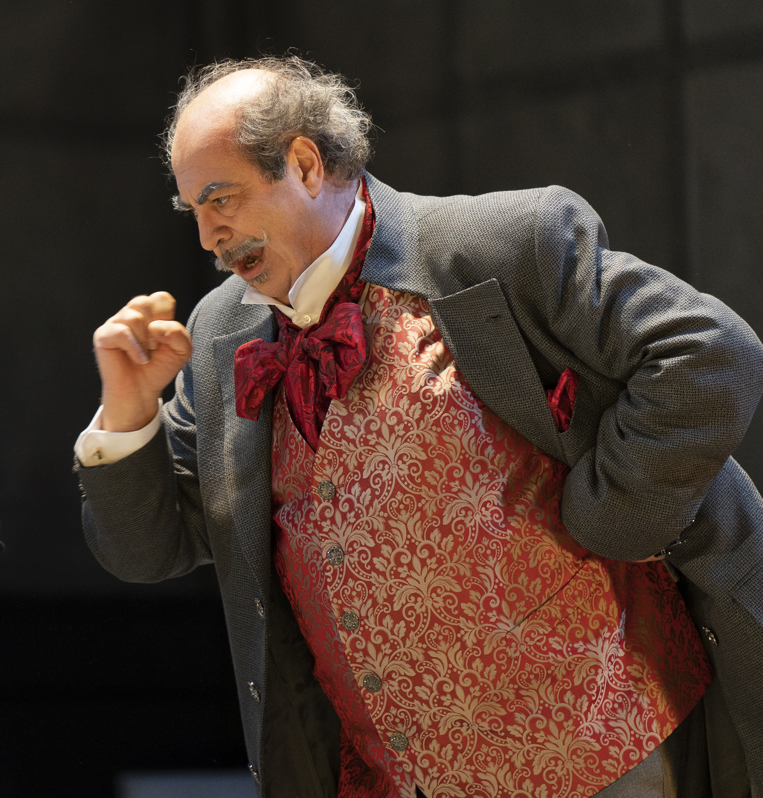

Italian Bass & Vocal Mentor
Donato Di Stefano
Voice. Style. Character.
Donato Di Stefano has spent a lifetime bringing Italian opera to life — not only through voice, but through language, rhythm, comedy, character, and truth.

Donato Di Stefano has spent a lifetime bringing Italian opera to life — not only through voice, but through language, rhythm, comedy, character, and truth.
From the stages of the Metropolitan Opera to Teatro alla Scala, he has embodied the great buffo and bass roles of the Italian repertoire with a commitment to authenticity, storytelling, and vocal craft.
As a vocal mentor, he brings the same depth and rigor to the teaching studio — helping singers find not just the note, but the word, the character, and the life behind every phrase.
“The word, the breath, the rhythm — they must all live together.”— Donato Di Stefano